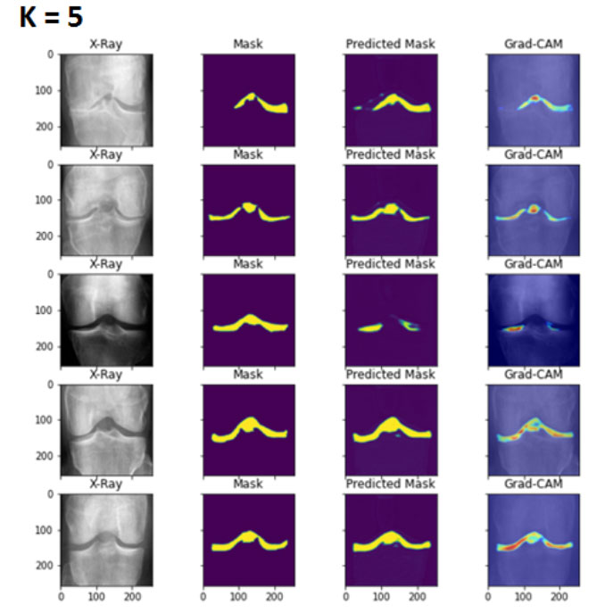
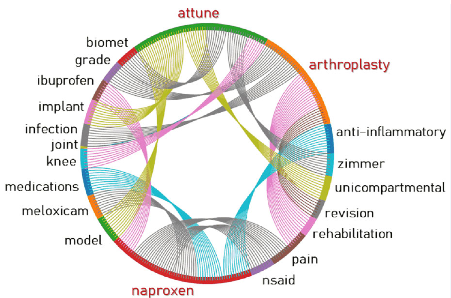
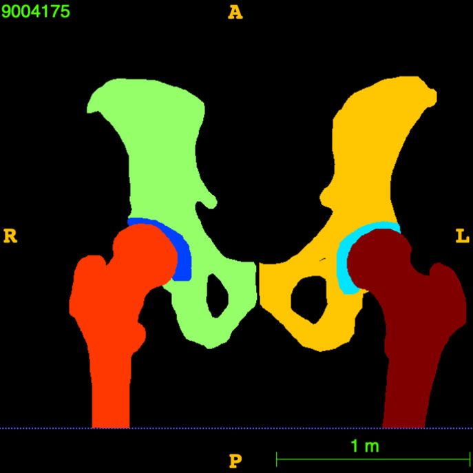
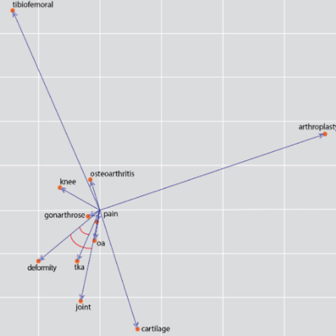

Research
Applied AI research focused on responsible, explainable, and impactful intelligent systems.
Research at AMIIE
The Applied Machine Intelligence Initiatives & Education (AMIIE) Lab conducts interdisciplinary research in artificial intelligence and machine learning with an emphasis on real-world impact. Our work spans healthcare and biomedical AI, responsible and explainable AI, computer vision and multimodal learning, graph-based machine learning, generative AI, and intelligent decision-support systems.
Across these areas, we are particularly interested in building AI systems that are accurate, interpretable, reliable, fair, and useful in practice. Our research combines methodological development with application-driven studies and often involves collaboration across computing, healthcare, and other scientific disciplines.
Core Research Programs
Our current research is organized around five complementary themes.
AI for Healthcare & Biomedical Research
Developing and evaluating AI methods for medical imaging, health data science, biomedical informatics, clinical prediction, patient-centered applications, and computational approaches that support biomedical discovery and healthcare decision-making.
Responsible, Explainable & Fair AI
Studying interpretability, explainability, reliability, fairness, and bias in AI systems, particularly in high-impact settings where model decisions must be transparent and trustworthy.
Computer Vision & Multimodal AI
Building learning systems for images and multimodal data, including medical image analysis, representation learning, image understanding, limited-data learning, and integration of visual and textual information.
Graph Machine Learning & Biomedical Networks
Exploring graph neural networks and network-based learning for complex biological and biomedical data, including the integration of molecular relationships, structured knowledge, and high-dimensional patient data for discovery and prediction.
Generative AI, LLMs & AI Agents
Investigating generative AI and agentic systems with a focus on reasoning, reliability, explainability, evaluation, and responsible use. Current interests include comparing conventional language models with agent-based AI workflows in complex decision-making tasks.
Featured Current & Recent Research
Selected projects and research directions from AMIIE's evolving portfolio.
AMIIE develops explainable and clinically oriented deep learning methods for medical imaging, with particular experience in musculoskeletal applications. Our work has addressed challenges such as limited labeled data, segmentation, disease grading, model interpretability, and the need for AI systems that can provide meaningful evidence alongside predictions.
Recent work includes explainable deep learning for MRI-based knee cartilage and meniscus segmentation, explainable contrastive learning for knee osteoarthritis grading, and generative-AI-assisted approaches for knee radiograph analysis.

Responsible AI is a central theme of AMIIE's research. We study how bias, model opacity, data imbalance, and subgroup performance differences can affect machine-learning systems, especially in medical and health applications.
Our work includes fairness analysis and bias-mitigation strategies for orthopedic image segmentation, broader reviews of responsible and explainable AI in medical image analysis, and fair and interpretable approaches to health outcome prediction.

Beyond imaging, AMIIE investigates machine-learning methods for structured and unstructured health data. This includes predictive modeling, feature engineering, computational text analytics, and evaluation of generative AI for health-data-science workflows.
Recent studies have examined fair and explainable machine-learning approaches for cancer survival prediction and compared large-language-model-assisted feature engineering with classical machine-learning approaches in health data science.

AMIIE is exploring graph-based machine learning for biomedical research, where relationships among genes, proteins, clinical variables, or other entities can be represented explicitly as networks rather than treated as independent features.
Current work examines graph neural networks, biological interaction networks, interpretable graph learning, and integration of molecular and patient-level data for biomarker discovery and clinically meaningful prediction.

AMIIE is expanding its work in generative AI toward AI agents and agentic workflows. A central research question is whether AI agents actually improve reasoning, reliability, and safety compared with conventional large language models.
Our interests include agent architecture and evaluation, tool-augmented reasoning, reliability and failure analysis, explainability, safety, and the responsible use of agentic systems in healthcare and other high-impact domains.
AMIIE studies computational approaches for extracting knowledge from scientific and health-related text. Earlier work includes open textual resources for total joint arthroplasty, neural word embeddings for osteoarthritis terminology, and large-scale text-mining approaches for biomedical and psychosocial-health research.
This line of work now naturally connects with large language models, generative AI, retrieval-based systems, and scientific knowledge discovery.

Selected Publications & Research Highlights
Representative recent work illustrating the breadth of AMIIE's research portfolio.
2026
- KneeXNet-2.5D: a clinically-oriented and explainable deep learning framework for MRI-based knee cartilage and meniscus segmentation. npj Health Systems, 2026.
2025
- State-of-the-art in responsible, explainable, and fair AI for medical image analysis. IEEE Access, 2025.
- Predicting cancer survival at different stages: Insights from fair and explainable machine learning approaches. International Journal of Medical Informatics, 2025.
- Explainable Contrastive Learning for KL Grading Classification in Knee Osteoarthritis. IEEE EMBC, 2025.
- Explainable Feature Engineering in Health Data Science: Empirical Comparison of ChatGPT-4o and Classical Machine Learning Methods. ACM/IEEE CHASE, 2025.
- Advancements in AI for Breast Cancer Diagnosis: A 2024–2025 Systematic Review Update. International Conference on the AI Revolution, 2025.
Research Philosophy
AMIIE emphasizes interdisciplinary, student-engaged research that connects methodological AI innovation with meaningful applications. We aim to develop research that is not only technically strong, but also interpretable, reproducible, responsible, and capable of contributing to real-world scientific and societal needs.